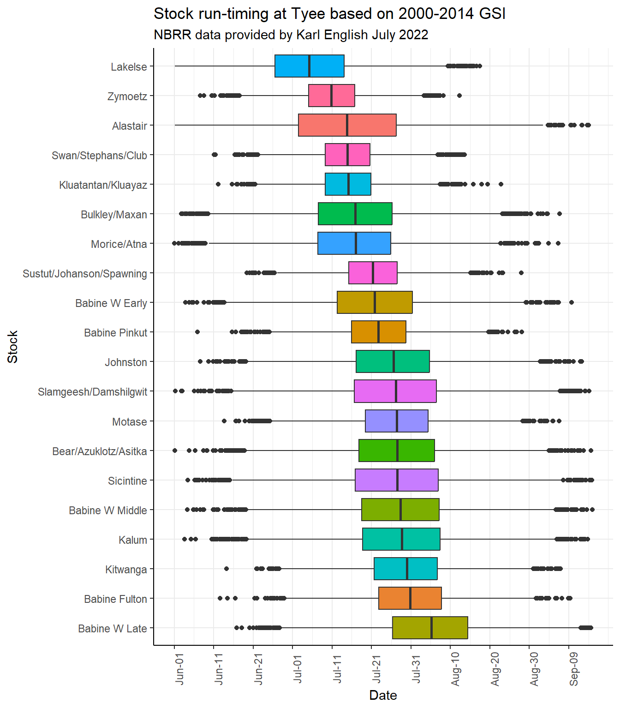
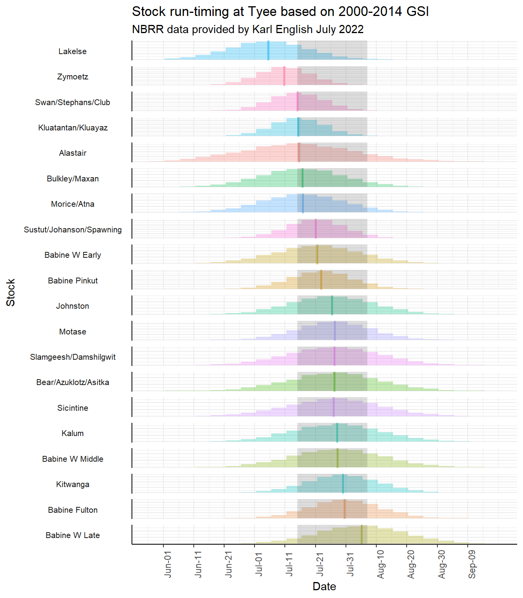
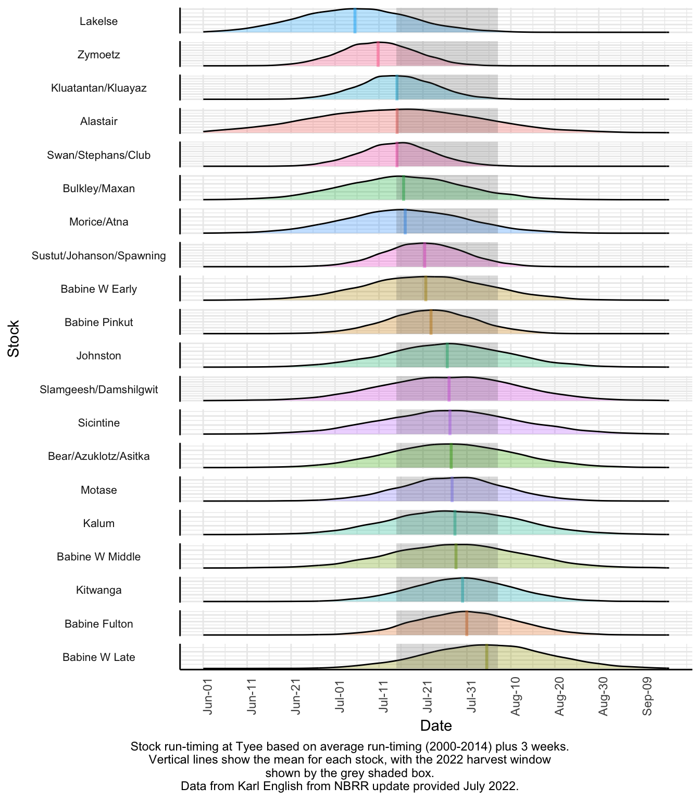

Skeena Sockeye In Season Update for SFNTC
June 24, 2024
Summary
The pre-season forecast for the Total Return of Skeena sockeye in 2024 ranges from 0.58 to 4.0 million (90% confidence range) with a point estimate (p50) of 1.54 million.
The forecast for 2024 includes a low return of age-4 sockeye, and an average return of age-5 sockeye.
The Tyee test fishery started on June 10.
To date 21,762 sockeye are estimated to have passed by Tyee, with about 1.5% of the run through to date on average.
It is too early to use the run timing to predict a final 2024 return of sockeye, however it is encouraging to see sockeye coming through already.
If sockeye return at the pre-season forecasted abundance, a small commercial fishery will be able to be prosecuted (both Area C and demo).
Appendix A will include information on the other species caught in the Area 4 commercial fishery and CPUEs when available.
Appendix B includes information on run-timing of specific Skeena Conservation Units/stocks.
Tyee Escapement and TRTC
| Cumulative.to.Date | Number.of.Sockeye | Run.Timing | Percent.Through |
|---|---|---|---|
| Escapement Past Tyee | 21762 | Average | 1.5 |
| TRTC (Escapement+Catch) | 21762 | One week early | 4.0 |
| Catch (preliminary) | 0 | One week late | 0.4 |


Tyee run-timing model
| Run.Timing | Forecasted.Final.Run.Size |
|---|---|
| Early | 615674 |
| Average | 1459338 |
| Late | 4438629 |

Babine Fence
- Will be added when available.
Babine Sockeye Jacks
- Will be added when available.
Babine comparison with Tyee
- Will be added when available.
Area 4 Commercial Marine Catch
- Will be added when available.
First Nations Demo Catch
- Will be added when available.
Appendix A-Catch of pink, chum, coho, chinook and steelhead
- Will be added when available.
Appendix B-Population specific run-timing through Tyee
Notes:
Based on NBRR update data (2000-2014) provided by Karl English July 2022. Will add in the newer data and some comparisons.
These are average run-timings.
Explorations on the differences between the average and ANNUAL run-timing standard deviations are underway for stocks with appropriate sample size.


